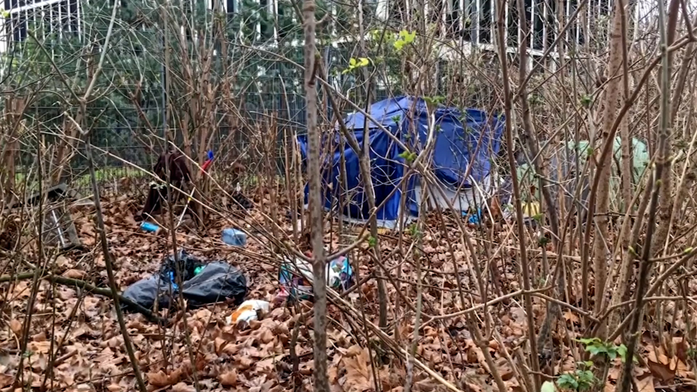
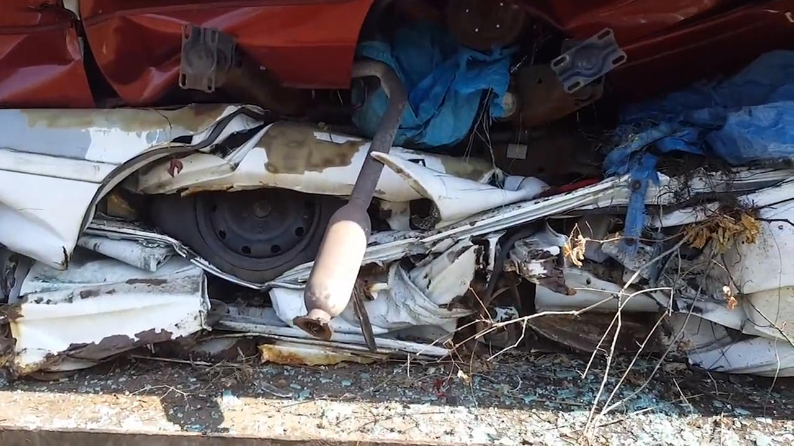

Home
English
Usability
About
Contact
mappingTheStudio64bit.de
Die Videoarbeiten
Home
Die Videoarbeiten
Die Website
Die Veranstaltung, Debatte
About
English
✕
Quetta-city, 4:02, 2022

✕
Dreaming, 04:18, 2022

✕
Over write-ride, 03:35, 2022
✕
Catharsis, 04:46, 2022
Offline-Präsentation
✕
Offline-Präsentation - Vorschlag 1
✕
Offline-Präsentation - Vorschlag 2